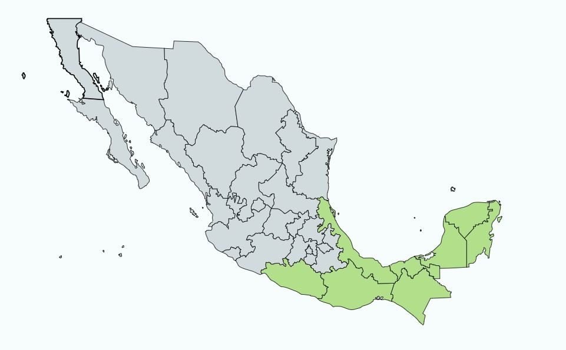

Descripcion:
Con el nombre de akits se conoce a una planta de la familia de las Apocináceas cuyo nombre botánico es Thevetia ahouai (L.) A de Candole. Esta planta nativa de las regiones tropicales de América se encuentra de manera natural desde el sureste de México. El akits es un arbusto hasta de 3 metros de alto, siempre verde, con látex blanco y lechoso. Se reconoce por sus hojas simples, dispuestas en espiral, estrechamente obovadas, glabras, con el margen entero y el ápice obtuso. Las flores son de color amarillo pálido, sobre pedicelos gruesos, con la corola en forma de embudo, con 5 pétalos con los bordes convolutos. Los frutos drupáceos se producen todo el año. Consisten de drupas carnosas y angulosas de color rojo brillante en la madurez en cuyo interior se encuentran dos o tres semillas.
Usos Medicinales:
Las hojas son usadas como analgésicos para tratar el dolor de dientes; el látex se emplea para aliviar padecimientos como: sarna, sordera, tumores y úlceras.
Contra-indicaciones:
Solo las hojas son utilizadas para uso medicinal. Por ninguna razón pretenda usar los frutos y las semillas estos contienen sustancias tóxicas que provocan alteraciones en el sistema nervioso central y en el corazón. En deteminados casos pueden provocar la muerte.
